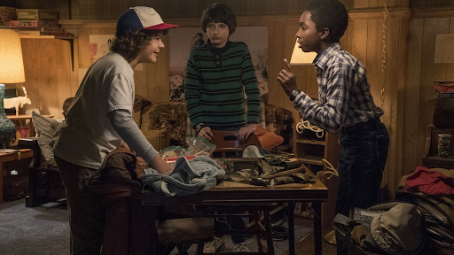
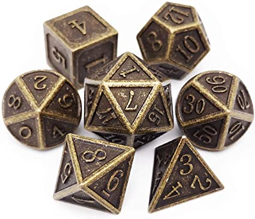
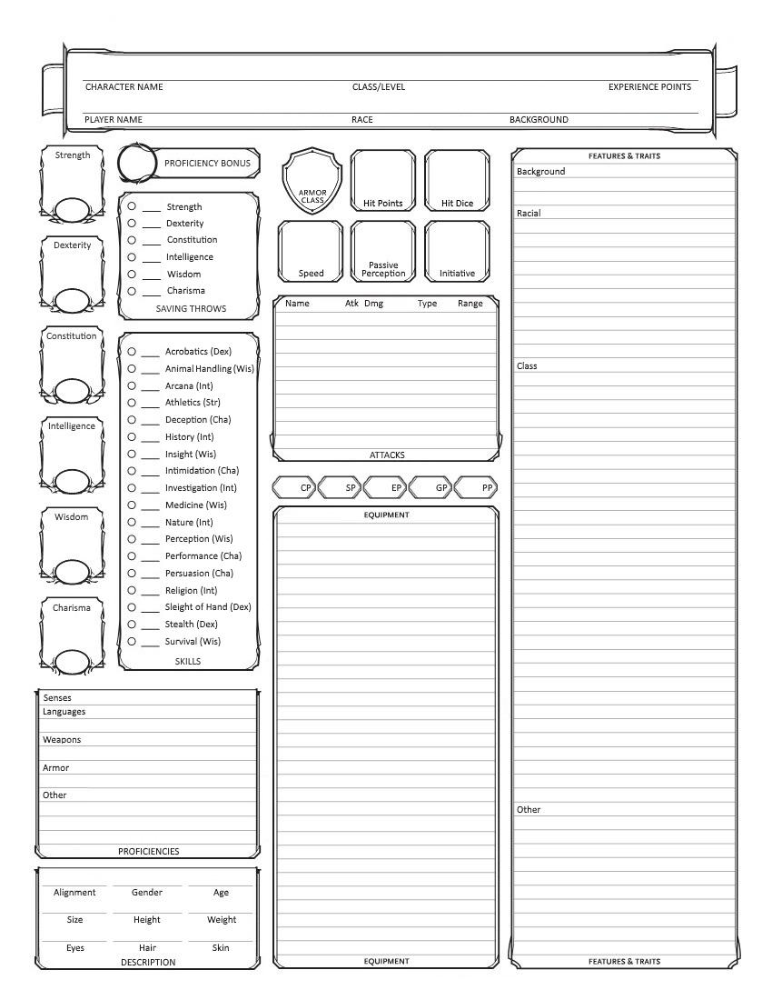
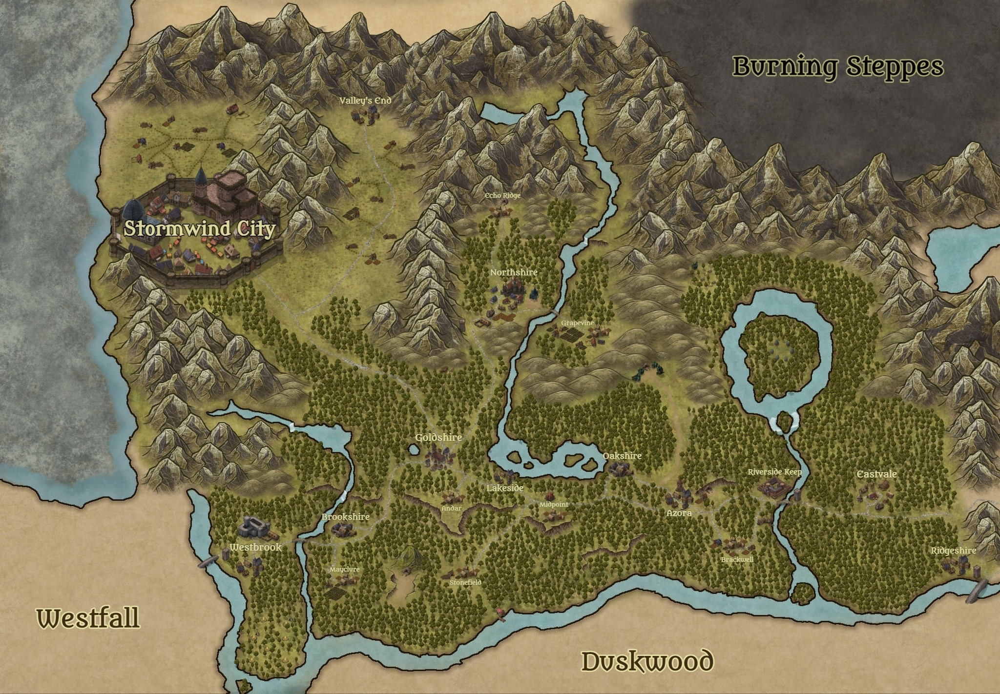
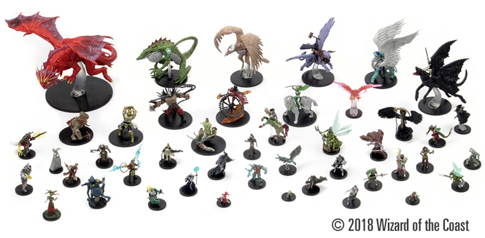

Basic Supplies for DUNGEONS & DRAGONS
In order to have the best experience at playing, there are some Supplies that will take the game to another dimention. Here are the essentials:
How to find a group?
Finding a group can be as easy as joining clubs and pages on social media such as Discord, Facebook, Twitter for example.
CoreRule Book
Required to gain a basic understanding of the game. Having a rulebook will introduce you to a variety of ways to create more adventures and experiences.

Dice
The dice will determine whether someone’s attacks hits or misses, whether the character rolls aways or does some dangerous task. The dice are unpredictable but anything is possible.
Character Sheets
Character Sheets are used to keep track of valuable information of the character. In these sheets, you can have the class level, background, race, alignment among other characteristics.
Maps
Maps are a great way to explore and visualize the location so there is a better orientation for the characters. Maps are not required because players often build the maps themselves.
Figures
Miniatures can be a great way to physically represent the combat but it’s not required since you can imagine it in your head.
Online sources (Role 20)
It’s an optional platform where you can play